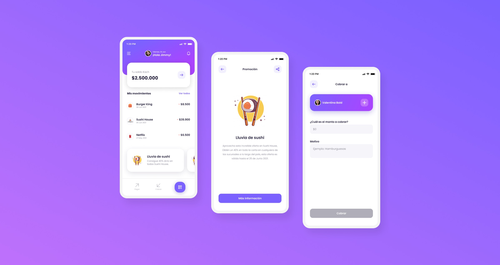
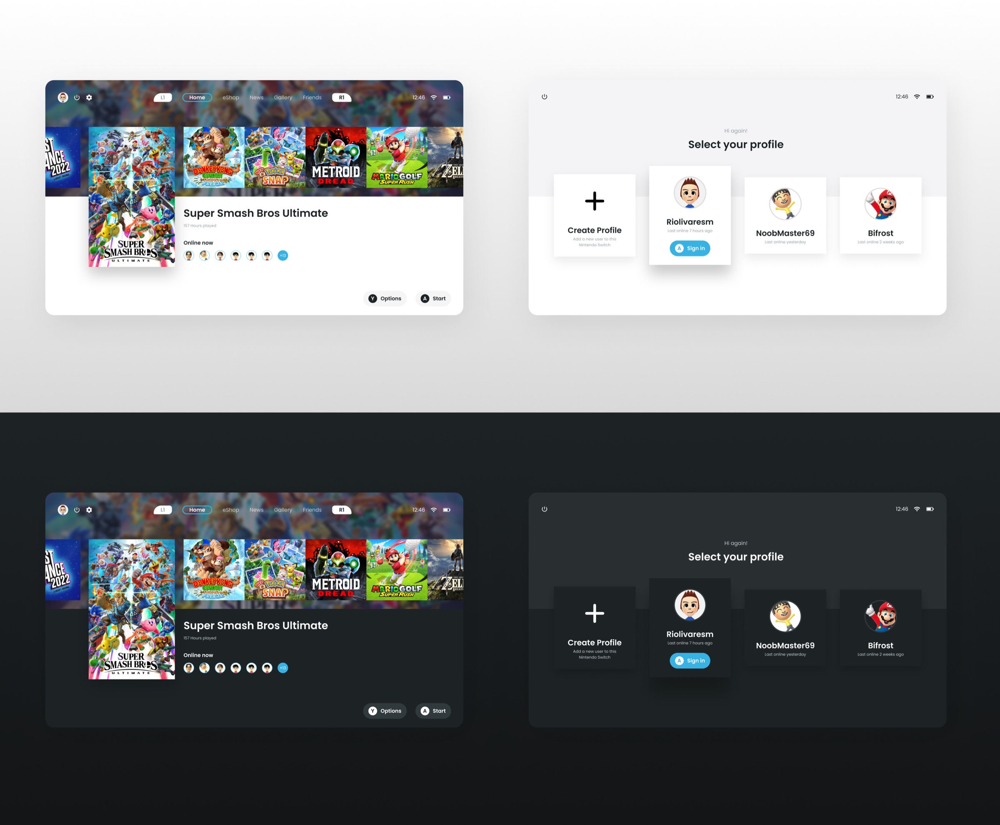

Interface concepts built to keep learning.
A collection of personal studies exploring visual hierarchy, interaction, accessibility, usability, and experience across different product categories.
Practice is a way to question familiar patterns, sharpen craft, and explore how an interface can communicate more clearly.
- Client
- Personal project
- Role
- UI Designer
- Format
- Concept studies
- Status
- Ongoing
01 · Kach Wallet
Creating room to breathe
Many fintech interfaces try to show every capability at once, which can weaken hierarchy and overwhelm the experience. This wallet concept explores a calmer structure with more visual space and clearer separation between primary and secondary information.

02 · Group Map
Keeping a group in sync
This concept supports groups meeting at a shared destination. People can see where everyone is in real time, how each person is traveling, and whether someone has run into a delay on the way.
03 · Nintendo Switch
Making the social layer visible
This reimagined Nintendo Switch interface keeps players more aware of where their friends are and what they are doing. It also gives game artwork a stronger role in the overall experience.
